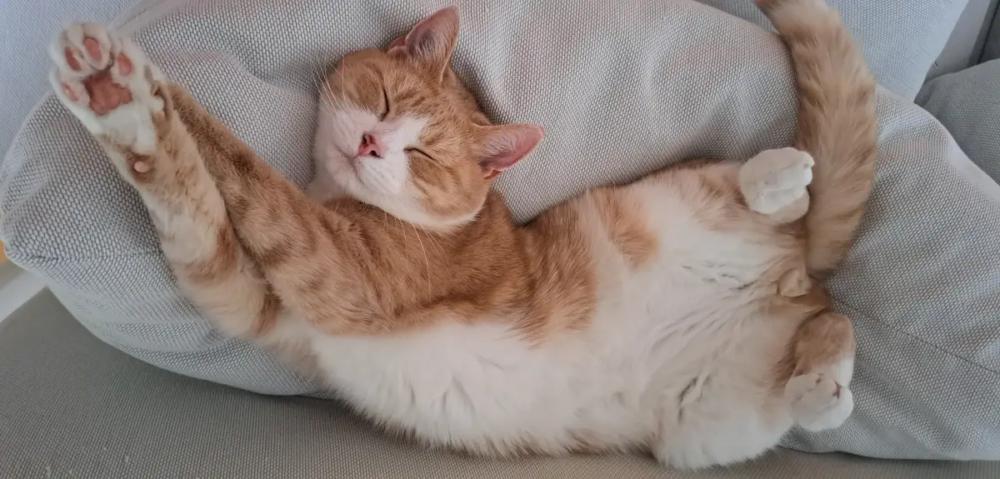

Ruska
Ruska came to us together with his brother Noki on September 8th, 2020, shortly after our honeymoon. He had just undergone a dental cleaning procedure and arrived still a little sleepy from the anesthesia.
Ruska is a peach tabby caramel-toffee-ice-cream kind of cat. Curious, social, attention-loving, and an incredibly loud purrer — a classic orange cat in every possible way.
Ruska especially enjoys outdoor adventures on a harness, and we have taken many walks together in the forest. Traveling by car also became much easier once we switched from a carrier to a harness setup.